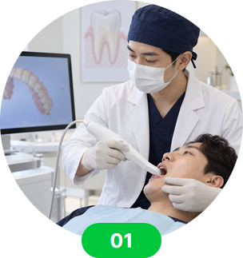
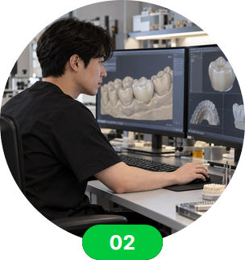
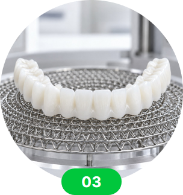
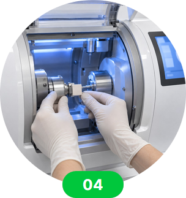
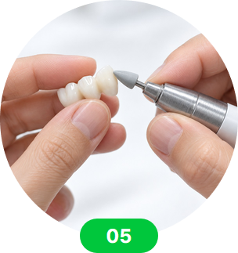
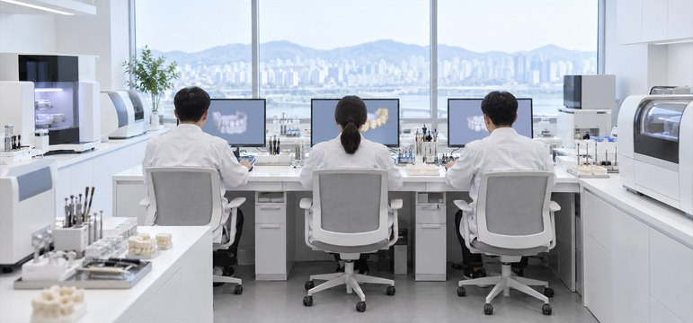
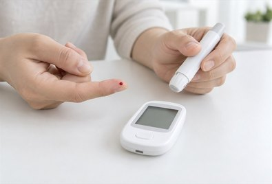
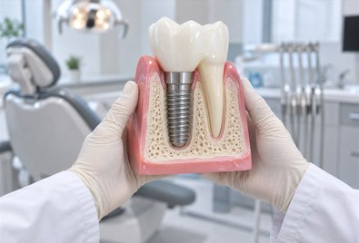
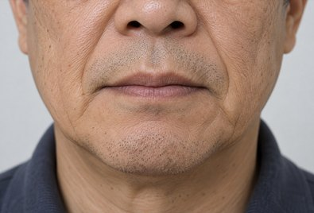
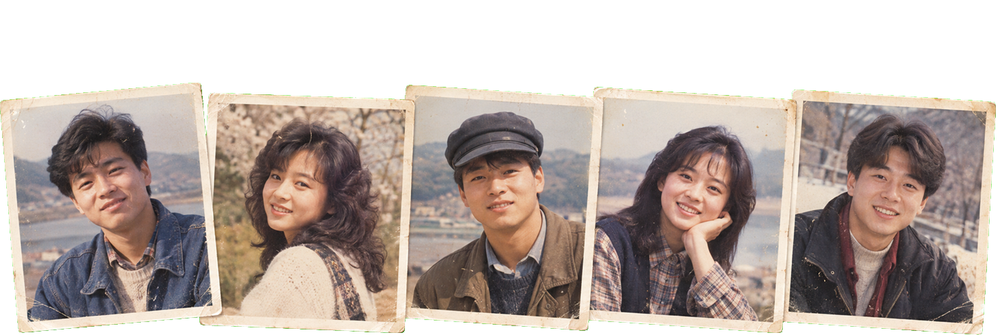

한국어 선택
한국어 선택 


디지털 기공실
시술 당일 임시 보철을 사용할 수 있는지는 어떤 조건으로 정할까요?
시술한 날 임시 보철을 검토할 수 있는
치과는 어떤 조건을 갖춰야 할까요?
온담길 시니어케어 기공 연구소는
온담길치과의 핵심 연구기관으로
당일 보철 체계,
온담길 시니어케어 수술 가이드 등
어르신의 교합과 관리 편의를 고려한 보철을
설계하고 만드는 일을 맡습니다.
온담길 시니어케어 임플란트에 최적화된
하루 보철 협업 과정
일반적인 임플란트 과정은 진료 기간이 길고
외부 제작 단계를 거쳐야 해서 어르신이 원하는 수정 사항을
바로 반영하기 어려웠습니다.
온담길 시니어케어 기공 연구소는
이런 불편을 줄이기 위해 원내에서 설계와 검토를
함께 진행하는 체계를 갖추고,
온담길 시니어케어 임플란트에 맞춘
당일 임시 보철 작업 흐름을 마련했습니다.
디지털 기공실
개인별 가이드와 임시 보철을 만드는 순서
-

구강 스캔
-

온담길 시니어케어 수술 가이드
와 보철 형태 설계 -

치과용 3D 출력 장비를
사용한 모형 제작 -

보철 가공 장비로
기본 형태 가공 -

기공 담당자의
세부 형태 마무리
당일 임시 보철을 검토할 수 있는 까닭
-

온담길치과 내 직접 제작 체계
필요한 경우 개인별 수술 가이드를 쓰고,
회복 상태에 맞춰 고정형 임시 보철을 판단하는
과정을 한곳에서 이어 갈 수 있는 까닭은
설계와 수정을 원내에서 바로 하기 때문입니다.
온담길 시니어케어 기공 연구소에서는 온담길치과의
어르신 문진과 보철 관리 과정을 교육받은
보철 제작 경험이 많은 기공 담당자들이
임플란트 보철의 형태와 맞물림을 살피며 작업합니다.
-
당일 임시 보철을 검토하는 의료진과
기공 작업실 협력 체계온담길치과는 조건이 맞는 경우 시술 당일 고정형 임시 보철을 검토하기 위해,
임시 보철 담당 의료진이 보철의 크기와 형태를 설계하고
장착을 마칠 때까지 직접 확인합니다.
원내 기공 담당자와 바로 수정 내용을 주고받으며,
내원하신 분의
입안 상태에 맞춘 보철을
당일 만들 수 있는지 확인합니다. 장착 뒤에도 씹을 때의 불편이나 작은 수정 사항을
바로 반영할 수 있도록
같은 공간에서 확인하는 진료 흐름을 운영합니다.
온담길치과는 왜
온담길 시니어케어 가이드를 원내에서 직접 만들까요?
온담길치과에 상담을 요청하는 많은 분은
다음과 같은 상태 에 해당하는 경우가 많습니다.
-
중장년층 이상의 나이
-
혈당·혈압 등 만성질환

-
잇몸뼈의 폭이나 높이가 부족하다

-
남아 있는 치아가 거의 없다

뼈 상태와 치아 결손 범위가 복잡한 분에게 일반 규격의 수술 가이드를
적용하는 경우
계획한 위치를 맞추기 어려울 수 있고,
시술 시간도 길어져 몸에 부담이 될 수 있습니다.
특히 남은 치아가 거의 없는 분은
임플란트를 계획할 때
고정체의 자리와 방향을 보철 계획과 함께 정해야 합니다.
온담길치과 온담길 시니어케어 기공 연구소에서는
“온담길 개인별 수술 가이드”를 원내에서 설계하고 출력 과정을 확인해
계획한 위치를 시술 중 확인하고 절개 범위를 조절하는 데 활용합니다.
온담길치과 온담길 시니어케어 기공 연구소에서는
“온담길 시니어케어 전용 수술 가이드”의
설계와 출력 과정을 원내에서 확인해
계획한 자리와 방향을 확인하고,
회복 중 붓기와 출혈 부담을 낮추는 방법을 검토합니다.
예전 모습을 참고 자료로 삼아
검사 결과로 진료 순서를 짜는 온담길 시니어케어 임플란트

온담길치과 실제 환자분들의
예전 모습 참고 이미지
임플란트는 이제 씹는 기능만
되찾는 진료에서 벗어나고 있습니다.
보철은 음식을 씹는 일 외에도
입술선과 얼굴 인상에 영향을 줍니다.
임플란트 시술 뒤 식사는 한결
편해졌지만,
입술 주변과 얼굴 비율이 어색해 보여
아쉬워하시는 분이 적지 않습니다. 보철의 모양과 관리 편의까지 살펴야 하는 이유입니다.
이런 불편은 각자의 입술선과 얼굴 비율에 어울리는
치아 모양까지 함께 살피지 못한 데서 올 수 있습니다.
씹기와 보철 모양을 함께 살피는
온담길치과 임플란트
온담길 임플란트 진료는 보철 장착 뒤의 생활까지 확인합니다.
예전 사진과 현재 얼굴 비율을 참고해 어울리는 보철 형태를 상의합니다.
입술선과 얼굴 비율을 함께 살피는
디지털 얼굴 균형 분석 장비
온담길 시니어케어 통합 치료를 위한
보철 제작용 디지털 장비 운영
온담길 디지털 기공실에서는 구강 스캔과 보철 설계에
필요한 작업 순서와 확인 항목을 정리해 두고 있으며,
용도에 맞는 장비를 사용해 제작 시간을 줄이면서
입안 형태와 맞물림에 맞는 보철을 제작합니다.
치료 중에도 식사를 거르지 않도록.
어르신의 웃음을 되찾는 온담길 시니어케어
 상담 안내
상담 안내  전화 문의
전화 문의  카카오톡 문의
카카오톡 문의